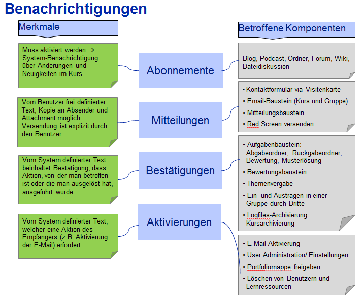

Es gibt verschiedene Benachrichtungstypen die über einen Benachrichtungskanal verwaltet werden. Die Änderungen werden mit einer bestimmbaren Periodizität angezeigt bzw. versandt.
Tests zu BenachrichtungenManuelle Tests zu Benachrichtigungen
Last Tests zu Benachrichtigungen
Keys für ÜbersetzungenDie Entwickler sind gebeten auf der folgenden Seite die geänderten und neuen Keys einzutragen:
Formen der Benachrichtung
| Typ | Was | Merkmale | |
|---|---|---|---|
| Abonnements | Abonnierbare Bausteine: Blog, Podcast, Ordner, Forum, Wiki, Dateidiskussion | Absender: | System |
| Empfänger: | Abonnierer | ||
| Versand: | Muss aktiviert werden --> automatisch sobald abonniert wurde und tägliche Benachrichtigung ausgewählt wurde, tägliche Zustellung | ||
| Inhalt: | Vom System definierter Text mit JumpIn-Link, Benachrichtigungen über Änderungen und Neuigkeiten im Kurs | ||
| Weitere: | Einsehbar unter Home/Abonnements/Neuigkeiten | ||
| Mitteilungen | Kontaktformular via Visitenkarte Email-Baustein(Kurs und Gruppe) Mitteilungsbaustein Red Screen versenden |
Absender: | Benutzer |
| Empfänger: | Vom Benutzer ausgewählter Empfänger | ||
| Versand: | Explizit per „Senden-Button“, sofortige Zustellung | ||
| Inhalt: | Vom Benutzer frei definierter Text (allenfalls vom System definierter nicht veränderbarer Footer) | ||
| Weitere: | Kopie an Absender und Attachment möglich | ||
| Bestätigungen | Aufgabenbaustein: Abgabeordner, Rückgabeordner, Bewertung, Musterlösung
Bewertungsbaustein Themenvergabe Ein- und Austragen in einer Gruppe durch Dritte Logfiles-Archivierung (wenn Kurs archiviert wird) |
Absender: | System |
| Empfänger: | Betroffener oder auslösender Benutzer | ||
| Versand: | Automatisch bzw. im Kurseditor eingestellt, dass Bestätigung gesendet wird, sofortige Zustellung | ||
| Inhalt: | Vom System definierter Text, Bestätigung, dass Aktion, von der man betroffen ist oder die man ausgelöst hat, ausgeführt wurde. | ||
| Weitere: | Studierender wird nicht mehr per E-Mail über Abgabe bestätigt, sondern es ist für Studierende via GUI ersichtlich, dass und was er abgegeben hat. | ||
| Aktivierungen | Email-Aktivierung (Bestätigung von E-Mail Adresse)
User Administration / Einstellungen Portfoliomappe freigeben Löschen von Benutzern und Lernressourcen |
Absender: | System |
| Empfänger: | Betroffener Benutzer bzw. bei E-Portfolio-Einladung bestimmt der Benutzer den Empfänger. | ||
| Versand: | Automatisch, bzw. „Send-Button“ bei E-Portfolio-Einladung, sofortige Zustellung | ||
| Inhalt: | Vom System definierter Text mit JumpIn-Link, | ||
| Weitere: | Erfordert Aktion des Empfängers (z.B. Aktivierung der E-Mail oder Aufruf der Lernressource, falls sie nicht gelöscht werden soll) | ||
| Deutsch | Englisch |
|---|---|
| Benachrichtigung | Notification |
| Abonnements | Subscriptions |
| Mitteilungen | Messages |
| Bestätigungen | Confirmations |
| Aktivierungen | Activations |
| Auslöser (für Benachrichtigungen) | Events |
| Benachrichtigungseinstellungen | Subscribers Settings |
| Neuigkeiten | News |